In hierdie hoofstuk gaan jy leer omtekeninge te
maak wat die presiese groottes van dele van
voorwerpe wys. Dié soort tekening wys ook hoe voorwerpe vanuit verskillende
waarnemingspunte
lyk
.
Figuur 1
Figuur 2
Figuur 3
1.1 Oor ortografiese tekeninge
In grade 7en 8 het julle verskillende maniere geleer
om julle ontwerpe te teken.
Jy kan jou idees vinnig met sketse op papier vaslê. Die byvoeg van perspektief
laat tekeninge meer lewensgetrou lyk. As jy beskaduwing en kleur byvoeg, lyk jou
tekeninge nog beter.
Die woord ortografies, is van
twee woorde afkomstig. “Orto”
beteken om reguit na ’n plat
vlak van ’n voorwerp te kyk.
“Grafies” beteken ’n tekening
.
Figuur
4
Figuur
5
Figuur
6
Jy gaan nou leer hoe om
ortografiese
tekeninge te maak. Dit beteken dat jy
van verskillende kante na ’n voorwerp
gaan kyk en afsonderlike tekeninge sal
maak van wat jy sien.
Slegs drie aansigte van
die boks kan
gesien word
.
Hoeveel vlakke van die kubus word
nie op die tekening gewys nie
?
Figuur
7
As jy reg van bo
af kyk op ’n kubus
wat soos hierdie een ingekleur is, sal
jy ’n blou vierkant sien.
Figuur
8
Figuur
9
As jy na die kubus kyk vanaf ’n spesifieke
posisie aan die linkerkant, sal jy ’n geel vierkant
sien.
.
Figuur
10
Figuur
11
As jy na die kubus kyk vanuit ’n spesifieke
posisie aan die regterkant, sal jy ’n rooi vierkant sien.
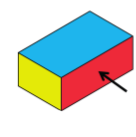
Figuur
12
Figuur
13
Dit word ook ’n sy-aansig
genoem.
Dit kan ook die vooraansig
genoem word.
Die vooraansig, bo-aansig en een sy-aansig van ’n
klein huisie word hieronder
gewys. ’n Stel tekeninge soos hierdie word eerstehoekse ortografiese projeksies
genoem
.
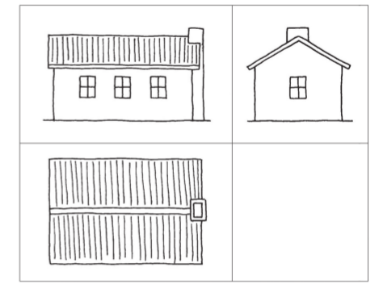
Figuur
14
Eerstehoekse ortografiese
projeksies word gewoonlik, soos hieronder gewys, in
blokke geteken. Die vooraansig word eers in die boonste linkerkantse blok
geteken.
Daarna word konstruksielyne vanaf die vooraansig geteken om dit makliker te
maak om die bo-aansig en ’n sy-aansig te teken. ’n Sy-aansig kan ook ’n
endaansig
genoem word.
.
Vooraansig
Sy-aansig
Bo-aansig
1.2 Maak jou eerste ortografiese tekeninge
Regs word ’n isometriese tekening van ’n mobiele
trap gewys. Die trap is 900 mm wyd. Die ander
afmetings word op die sy-aansig op die volgende
bladsy gewys. ’n Vooraansig van die trap word in die
linkerkantse boonste blok hieronder gewys. Gebruik
konstruksielyne om ’n bo-aansig en ’n sy-aansig in
die linkerkantse onderste blok, en in die regterkantse
boonste blok, te teken.
Figuur
15
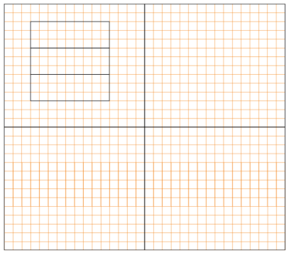
Figuur
16
Argitekte gebruik ortografiese tekeninge van ’n
huis om die bouer in te lig hoe groot die vensters, hoe lank
die mure en hoe hoog die dak is. Dit word dimensies of
afmetings genoem. Ons skryf afmetings gewoonlik in
millimeters (mm).
Die klein lyntjies op jou liniaal is
1mm van mekaar af.
.
Kyk na hierdie sy-aansig van ’n trap. Jy kan die
afmetings langs die pyle sien
.
Figuur
17: Sy-aansig van die trap met afmetings
Kyk na die tekeninge hieronder en op die volgende
bladsy. ’n Argitek het hulle
gemaak terwyl hy ’n huis ontwerp het
.
Figuur
18: Voorlopige tekeninge
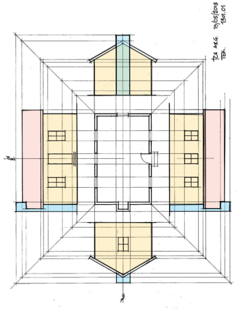
Figuur
19: Finale tekeninge
Verskillende soorte lyne in tekeninge
In die volgende tekening word
verskillende soorte lyne gebruik:
Figuur
20
Die volgende lyne word in die tekening hierbo
gebruik:
Maak op die volgende bladsy ’n vryhandkopie van
hierdie tekening en gebruik
dieselfde soorte lyne daarin.
Volgende week
In die volgende hoofstuk gaan jy jou tekenvaardhede verder ontwikkel. Jy gaan
verskeie tekeninge van ‘n stel trappe en ‘n oprit maak.
2 Maak voorsiening vir
rolstoele
Die werk wat in hierdie hoofstuk gedek word, sluit
die maak van akkurate isometriese en ortografiese
tekeninge met instrumente in
.
Nelson Mandela Hoërskool in die Oos-Kaap is
splinternuut. Dit het ’n baie mooi, nuwe
gemeenskapsaal met ’n verhoog. Die leerders gebruik die verhoog vir die opvoer
van dramas, vir
modeparades, musiekgeleenthede en kooruitvoerings van geestelike musiek. Die
argitekte het
uitstekende beligting en ’n goeie klankstelsel ontwerp, maar hulle het een baie
belangrike ding
vergeet, en dit is om vir rolstoeltoegang voorsiening te maak, sodat gestremde
mense ook toegang
tot die verhoog kan kry
.
Die skoolhoof het die Graad 9-tegnologieleerders
gevra om ’n mobiele trap en rolstoeloprit/-afrit te
ontwerp wat voor die verhoog geplaas kan word.
.
Figuur
1
Figuur
2
2.1 ’n Trap en ’n oprit/afrit
Die Hoërskool Nelson Mandela het ’n nuwe
gemeenskapsaal. ’n Trap en rolstoeloprit/-afrit word vir
die verhoog in die saal benodig. Die skoolhoof het ’n
lys van dinge opgestel wat by die ontwerp van die trap
en die rolstoeloprit/-afrit in gedagte gehou moet word.
As jy na die prent op die vorige
bladsy kyk, sal jy sien wat ’n
oprit/afrit is.
Hierdie goed wat onthou moet word, staan bekend
as die “spesifikasies”
.
Die spesifikasies vir die trap en
rolstoeloprit-afrit
:
Die trap en die oprit/afrit moet ’n
eenheid-vorm sodat dit beweeg kan word.
.
Die eenheid moet voor die verhoog inpas,
sodat mense op die verhoog kan
oploop en rolstoele op en af kan gaan
.
Die verhoog is 400 mm hoog
.
Die trap moet breed genoeg wees vir twee
persone, omtrent 1 200 mm
.
Daar moet drie ewe groot treetjies wees
.
Die plat gedeelte van elke treetjie is 800
mm lank
.
Die oprit/afrit moet breed genoeg wees vir
een rolstoel – 1 000 mm
.
Die helling van die oprit/afrit moet 2 433
mm lank wees
.
Die oprit/afrit loop teen ’n helling van 10
̊
.
Die basis van die oprit/afrit moet 2 400
mm lank wees
.
Die oprit/afrit moet ’n handreling hê om
te keer dat die rolstoele afval
.
Om jou te help om te dink hoe die trap en
oprit/afrit gaan lyk, kan jy ’n paar
tekeninge maak.
Maak ’n rowwe tekening van hoe jy
dink die saamgestelde trap en oprit/afrit
moet lyk. Maak jou tekening op ’n skoon papiervel en maak dit groot genoeg
om die hele bladsy te vul
.
Die afmetings word in die
spesifikasies hierbo gegee. Skryf die afmetings op die
korrekte plekke op jou tekening
.
Isometriese tekening kan jou
help om duideliker te sien hoe die ding wat jy in
gedagte het, gaan lyk as dit gebou is. Om ’n isometriese tekening te maak, teken
al die vertikale lyne teen 90 ̊ ten opsigte van die basis, en die horisontale
lyne
teen 30 ̊ ten opsigte van die basis. Jy kan isometriese ruitpapier gebruik om
jou
hiermee te help
.
Aktiwiteit vir huiswerk
Kyk na die rooi lyne op die ruitpapier hieronder.
Sien jy hoe die
vertikale
lyn
opgaan deur die middel van die diamantvorms, en hoe die
horisontale
lyn dwars
oor die middel van die diamantvorms gaan? Die ander lyne gaan teen 30 ̊ ten
opsigte van die horisontale lyn
.
Gebruik nou ’n liniaal en skerp potlood en voltooi
die tekening van die kubus
hieronder.
.
Figuur
3
2.2 Isometriese tekening
In hoofstuk 1 is daar ’n isometriese tekening van ’n
trap. Hoe dink jy sal ’n
isometriese tekening van die oprit/afrit lyk? Dit sal waarskynlik soos ’n stuk
verjaarsdagkoek lyk
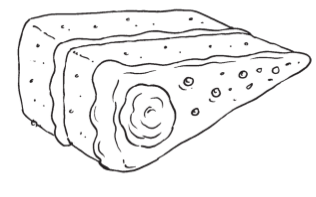
Figuur
4
Make a sketch of the wheelchair ramp that looks like the slice
of cake above, on the top part of the isometric grid on the
next page.
Now make a
better sketch on the bottom part of the page.
A sketch is a rough drawing
that helps you to quickly put your ideas onto paper. It makes
it easier to think about what you are designing.
You do not need to use a
ruler or exact measurements.
Look at the
list of specifications at the beginning of section 2.1 and
write the following on your drawing:
the height
of the ramp,
the length
of the sloping part of the
ramp,in other words the distance from A to B on thedrawing on
the right,
the length
of the base,
the width
of the ramp, and
the
10 angle
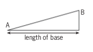
2.3 The plan in orthographic drawings
Make a sketch of the staircase on the
isometric grid below. Remember it has only three steps. Look at
the list of specifications and write the following on your
drawing:
the width
of the stairs,
the height
of the mobile staircase,
the height
of each step, and
the length
of the horizontal part of each step.
Homework
You
already have a drawing of the staircase and a drawing of the
wheelchair ramp. Sketch them together as one structure on the
isometric grid below.
Does your
stair/ramp look as if it could work? Does it meet all the
principal's specifications? Did you remember the handrail?
If
you are not satisfied with your drawing, now is the time to
make changes and do it again, because it will be assessed by
your teacher.
Make orthographic drawings of
your design
Another student designed the ramp and
staircase shown below, but this learner didn't follow the
specifications on page 16 correctly.
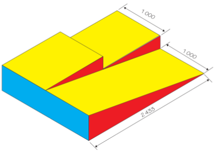
Compare the above
drawing with the specifications for the ramp, given at the
beginning of this chapter. Write notes below to indicate any
specifications that are not met.
On the next page,
draw a first-angle orthographic projection of your own design
of the stair/ramp, according to the specifications given at the
beginning of the chapter. Note that the specifications require
three steps. Draw the top view, a side view from the ramp side,
and a front view as a person that approaches the stairs to
climb them will see the stairs or ramp. You do not have to draw
the handrail as well.
Make all the drawings
to exact measurements, but keep in mind that if you draw it
full size, it will not fit on the paper. So think of a scale
that will fit on this workbook paper. Mark the real
measurements on all the sides.
The next chapter
In the next chapter, you will learn
more about different kinds of forces that may damage the things
we build. You will also learn how materials can be made
stronger, so that they can withstand forces that act on
them.
3 Structures,Forces and materials
In this chapter, you will learn about
the forces that act on structures and can break them. You will
see how structures and parts of structures can be strengthened.
You will also learn about different materials that are used in
structures, and how materials differ from each other.
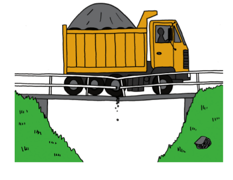
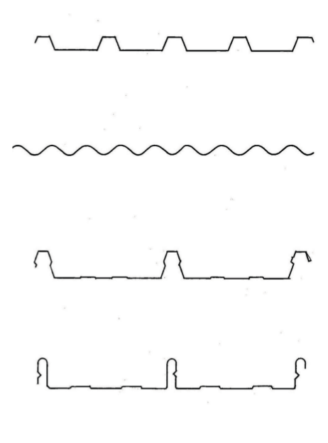
3.1 Forces act in different places
Identify and analyse
forces
The weight
of the boy in Figure 4 presses down on the chair as the arrow
shows.
When one
object pushes against another object, we say that a force is
exerted on the
object. In this case, you can say that the boy exerts a downward force on the chair, or that
there is a downward load on the chair.
In each of the pictures on this page and the next, make an
arrow to show how the load acts on the structure.
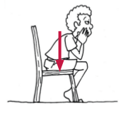
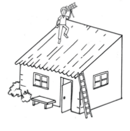
Is the load on
the roof in Figure 5 always in the same place? Why do you say
so?
Is the load on
the roof in Figure 6 always in the same place? Why do you say
so?
Are the loads
on the bridge in Figure 7 always in the same place? Why do you
say so?
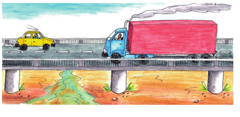
As long as a person sits still on a chair, the force on
the chair remains in the same place. This is called a
stationary or a static force.
In the above
picture, the truck and the car exert forces on the bridge. Can
these forces also be called static? Explain why you say so.
When a moving object exerts a force on another
object, you can say that the force is dynamic.
In each of the
following cases, state whether the force exerted on the table
is static or dynamic. Explain why you say so in each case.
A pot of
flowers standing on the table.
A
cat walking on the table.
A boy rolling a
soccer ball over the table.
A man scrubbing
the table.
What is the
difference between the loads exerted on the two tables
below?
Look at the different ways in which the
two trucks below are loaded. On the one truck, the drums exert
force everywhere on the cargo deck of the truck. On the other
truck, the load is just one big drum. The single drum exerts
force on a small part of the cargo deck.
A load that exerts an equal force over the whole
structure that supports it, is called an even load.
A load that mainly exerts a force on one part of the
structure that supports it, is called an uneven load.
Think of a house
with a zinc roof and the forces that the sheets exert on the
roof structure.
Is the load
even or uneven? Why do you say so?
Is the load
static or dynamic? Why do you say so?
Think of people
climbing up and down wooden steps.
Is the load
even or uneven? Why do you say so?
Is the load
static or dynamic? Why do you say so?
You have to design
two wooden tables, and you are requested to use as little wood
as possible. For the one table, the design brief states that
the load on the table will always be static and even. The
design brief for the other table states that it has to carry
the same weight as the first table, but the load will sometimes
be dynamic and uneven. Describe how your designs for the two
tables will differ, and explain why.
3.2 Forces act in different ways
Forces can
act in the following ways on structures or parts of
structures:
tension,
torsion,
compression,
shear,
and
bending.
The different pieces of a frame
structure are called sections, elements or members of the structure.
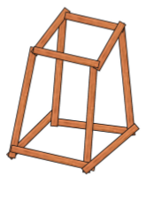
Forces can push, pull and
twist
Make six paper tubes by rolling sheets
of used writing paper. Use glue or tape to prevent the tubes
from unrolling.
Put your hands on
both ends of a tube and push them towards each other. When you
do this, you exert compression forces on the
tube.
Grab a tube at both
ends and try to pull it apart. When you do this, you exert
tensile forces on
the tube. You put the tube under tension.
Put the ends of the
tube on two books and press downwards on the middle of the
tube. What happens, and what kind of force did you apply to the
tube?
Grab a tube at both ends and twist it as shown in this picture.
When you do this, you apply torsion.
Join two tubes by
putting a match or small stick through them as shown below.
When you try to pull
the two paper tubes apart now, you will apply shear forces to the stick.
Find strength in shape
Fold it a third time,
so that you have a flat strip that is eight layers thick.
Make two more folded
strips like this.
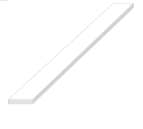
Put the folded
strip at the edge of your desk as shown below. Hold it down on
the desk with one hand and press down lightly on the outer part
of the strip to bend it downwards.
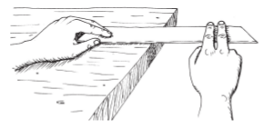
Now fold your paper
strip half-open again, and fold it in a new way so that you get
a triangular tube as shown below.
First fold like this: Then fold like
this:
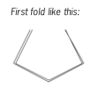
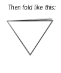
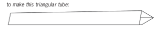
Put the
triangular tube at the edge of your desk as you did with the
flat strip in question 2. Hold it down on the desk with one
hand and press down lightly on the outer part to bend it
downwards.
What was easier
to bend, the flat strip or the triangular tube?
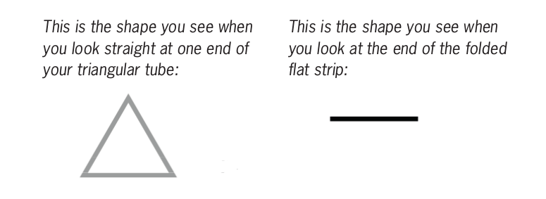
The shape
that you see when you look straight at one end of part of a
structure is called the cross-section or profile.
Make
free-hand sketches of the cross-sections of a round tube, a
square tube and a triangular tube, in the space below.
Open your
triangular tube and fold it again to have a T-profile as shown
on the right.
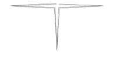
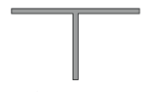
Let your
T-shaped section stand upright on your desk as shown here and
press downwards at the top. Do not bend it now.
Take one of the
flat folded sections you made in question 1. Hold it upright
and press downwards at the top like you did for your strip with
the T-cross section.
Which strip is
stronger when you press down on its end, the flat section or
the T-shaped section? Explain why.
A T-shaped section resists compression better than
a flat section that has the same length and is made
of the same amount of material (paper in this case).
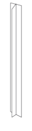
Compare the
resistance to compression of T-shaped, square-shaped and round
sections, each made from one sheet of A4 paper. Explain your
answers.
Figure 25: Metal
cross-sections
Metal
sections that are used to build frame structures are
made in a variety of profiles. Some popular profiles
are shown below.
H-profile. This profile is
often used as upright supports or columns, for example
in buildings. It resists compression very well, and it
does not bend easily.
I-profile. This profile is used
for railway tracks. The broad base provides
stability.
U-profile. This is lighter than
the H-profile. It is often used to provide horizontal
support, for example in shelves. The chassis of a truck
is normally made with U-beams.
This profile is often called
angle-iron, even if it is made of metal. It has higher
bending strength than flat strips. It is light and is
often used for cross-bracing in pylons, towers and
other structures.
Tube-profile. This is the best
profile for resisting torsion.
Using internal cross-bracing
to resist twisting
Imagine that
you made a frame structure with straight pieces of wood.
Now imagine
that you twist this frame structure like the person in the
photograph is twisting the towel.
The frame
structure could end up looking like this:
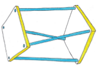
To prevent
the structure from getting twisted like this, you could add
more elements as shown here.
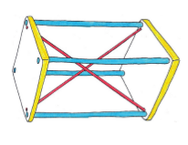
This is called internal cross-bracing.
3.3 Different materials for different purposes
How materials can differ from
each other
What bends more
easily: your pencil or a sheet of paper?
Put a sheet of
paper flat on your desk. Pick it up with both hands and bend
it. Now put it back on the desk. Is it flat again?
Material that bends easily, but returns to its original
shape when you let go of it, is called flexible material.
Material that is not flexible is called stiff material.
Is wet clay
flexible or stiff?
Is the leg of a
chair flexible or stiff?
Is a piece of
wire flexible or stiff?
Is your shoe
flexible or stiff?
Press your finger
against your desk. Now press your finger against your arm.What
was different when you pressed your finger against your desk
from when you pressed your finger against your arm?
When you press your
finger against a bag of sand, will it be the same as against
your desk or arm?
Bricks are made
by baking clay until it is hard.
Some materials are hard, and
some materials are soft.
Think of a
brick and a piece of foam plastic that is the same size as the
brick (like the foam used in mattresses). Which is easier to
pick up?
How many bricks
do you think you can carry easily if you put them in a box to
carry on your shoulder?
How many pieces
of foam plastic of the same size do you think you can carry
easily if you put them in a box to carry on your shoulder?
A brick is much heavier than a piece of
foam plastic of the same size.
One difference between baked clay and
foam plastic is that when you take pieces of equal size, the
baked clay will be heavier than the foam plastic. It will
require more effort to pick it up or to carry it.
The difference between baked clay and
foam plastic can be described as follows: Baked clay has a
higher density than
the foam plastic.
What material
has the highest density: wood or rock?
What material
has the highest density: glass or plastic?
Pieces of
metal that lie around outside sometimes look brown. This is
called rust or corrosion. Rust is formed by chemical reactions
between the metal and oxygen in the air or water. Wood and
glass do not corrode. Rock that contains iron does corrode.
When you walk in the veld, you can sometimes see pieces of rock
that have the same shade of brown.
Corroded rock can have
different colours, like those in the coloured strip at the
bottom of this page. In the past, colouring for paint was
obtained from corroded rock.
Iron is used in the
construction of towers, roofs, cars and trucks and sometimes
even furniture. What can you do to prevent iron from
corroding?
More about
metals
There are many different
metals, such as copper, iron, aluminium, chrome, gold and
platinum. Iron is cheaper than most other metals, because it
is so plentiful. It is also easy to make iron into different
shapes. Iron is normally mixed with a small amount of carbon
to form "steel", which is much stronger than pure iron.
Unfortunately, iron corrodes
or rusts easily, while other metals do not corrode as easily,
if at all. For this reason, iron is often mixed with other
metals, for example chrome, to make it resistant against
rust. "Stainless steel" is steel that contains a large amount
of chrome.
Materials in a house
A house is a good example of a
structure made of many different materials. To build a house
like the one below, you can use bricks, concrete, wood and
steel.
Figure 30
Different parts of the house are listed in the left column
of the table below. In the right column, fill in what material
you think that part of the house is made of.
Part of
the house
Material
it is made of
The walls
The window frames
The door
The roof structure
The roof cover
The fence
The paving around the house
Builders choose bricks, concrete,
wood and metal because each one is useful in different ways.
You can say different materials have different properties.
Concrete is hard and it will not
scratch easily, so builders use it on house floors. Concrete is
also stiff, so it will not bend when we walk on it. Concrete is
not damaged by water and it will not rust.
Bricks do not bend and do not rust,
so they are used to build walls.
Wood is used in a house for doors,
windows and roofs, because it is flexible. This means that when
you slam a door, the wood bends a little but will not
break.
Wood can be damaged by water, wind
and the heat of the sun. To protect wood against damage and to
make it last longer, it should be coated with varnish, oil or
some other preservative material.
Steel is hard and strong. Steel is
also flexible and it is not easy to crack with a hammer.
Therefore steel is used in security gates. However, steel is
damaged by water; this is called rusting or corrosion. To stop
rusting, you have to cover steel with special paint.
Fill
in which materials are used for the different parts of the
house in the middle column. Then fill in the reasons why you
think that material is used for that part of the house in the
column on the right.
Part of
the house
Material
Reasons
for choice of material
Walls
Window frames
Door
Roof structure
Roof cover
Fence
Paving around the house
Some houses have tile roofs, other houses have zinc roofs.
What are the advantages and disadvantages of tile roofs?
Advantages of tile roofs
Disadvantages of tile roofs
What are the advantages and disadvantages of zinc roofs?
Advantages of coated iron roofs
Disadvantages of coated iron roofs
In the old days,
wagon wheels were made of wood. Today we use rubber tyres. Why
did we change from wood to rubber?
When builders put
glass in a window frame, they push a soft sticky material
called putty round the edge of the glass. The putty dries until
it is hard and stops the glass from falling out. Peanut butter
is also a soft sticky material and dries in the sun until it is
hard. Why is it not a good idea to use peanut butter to fit
glass in window frames?
Next week
Next week, you will start with your
practical assessment task. You will make a plan to address a
need in a community.
4 Mini-PAT 1 A bridge to help the
community
Over the next six weeks, you will
design and build a model of a bridge. To do this, you will work
through the different stages of the design process and arrange
yourselves into teams.
Figure 1
Figure 2
Week 1
Investigate Granny Margaret Thabang's problem (60
minutes)
In your team, read through the following story.
Figure 3
Rivers provide much-needed water for
communities, but sometimes they can also make life difficult
for people. For example, during the rainy season, people from
villages on one side of a river struggle to get to the other
side of the river,if there is no bridge.
Many of the people in the KwaNogawu village next to the
uThukela River in KwaZulu-Natal work on the other side of the
river. The doctors, banks and shops that they need to visit are
also on the other side.
School children cross this river to
get to their schools, and the elderly have to walk through it
once a month to collect their government grants from the
offices on the other side.
Usually, the villagers cross the river
on foot, because the nearest bridge is very far away. But
during the rainy season, when the river is in flood, it becomes
very dangerous. The water levels are so high that it is
difficult to get through it safely, and the villagers have also
seen crocodiles in the river. Everyone is scared of drowning or
getting attacked by the crocodiles, but they don't have a
choice and have to go through the river to get to the other
side.
Write a few
sentences to explain the problem the villagers have.
Can you suggest a
few ways to help Granny Margaret Thabang cross the
river?
Figure 4: The tender request placed in a
local newspaper.
A tender is a bid for work
from a company. It gives details of how much the company
would charge to complete a project.
The Thukela Municipality placed a
tender request in the newspaper asking contractors to submit
tenders for a structure to help people safely cross the river
at KwaNogawu village.
Municipalities are not allowed to
choose a contractor without giving as many contractors as
possible a chance to apply. This is to stop anyone from being
favoured over others, and to prevent corruption. Each
contractor writes a tender document, which is a description of
their plan for the project and shows how much they will charge
to complete the work. The job is given to the contractor who
presents the best plan at the lowest price.
You are going to build a structure to
help the community. Read the story again and then investigate
the different bridges below to decide which structure will be
the best solution for the problem.
Investigate structures to solve the problem (60
minutes)
On this page and the next there are
drawings of different types of bridges. You learnt about these
bridges in Grade 8. Do you remember what the names mean? If you
cannot remember, look at your Grade 8 book or ask your teacher
to help you.
A: A beam and
column bridge
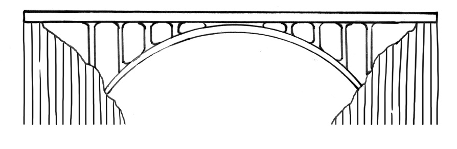
B: An arch
bridge
C: A truss
bridge
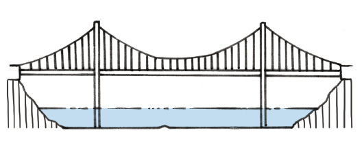
D: A
suspension
bridge
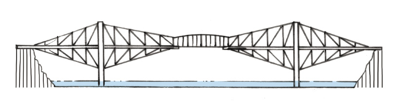
E: A cantilever
bridge
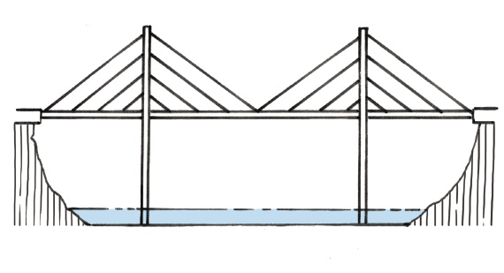
F: A
cable-stay
bridge of the harp shape
G: A
cable-stay
bridge of the fan shape
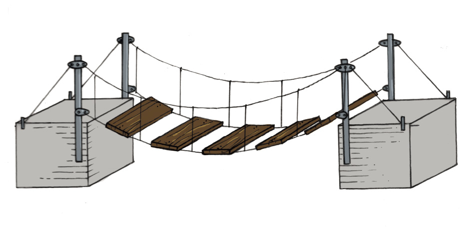
H: A small
suspension
bridge
Figure 5
Different types of bridges use
different materials and construction methods, but they all have
a similar function.
In your group, discuss some of the
advantages and disadvantages of each of the bridges for the
community. Think about which parts will help the community, and
which parts will not help.
If the bridge is meant to carry cars,
it might be too expensive for your tender. Remember that the
bridge has to solve the community's problem. In technology, we
call this fit-for-purpose. In this case,
it means that your bridge has to be strong and high enough to
carry people and not cars. However, your bridge has to be
strong enough to withstand floods, which are common in
KwaZulu-Natal. Your bridge must also be stable, so that it does
not sway and cause old people and children to fall when they
walk across. It should have a structure that can span a wide
river.
Use the following list to help you to
investigate each of the bridges in Figure 5on the previous
page. Also bring pictures of bridges to school. You can find
photographs of bridges in old newspapers and magazines.
Checklist
for investigating bridges
Yes
No
Is the bridge for cars?
Is the bridge for people?
Is the bridge too expensive for
the tender?
Can the bridge be built strong
and high enough so that it is not washed away by
floods?
Can the bridge be built so that
it is stable and does not sway?
Can the bridge be built long
enough so that it can reach or span across the
river?
Is the bridge strong enough so
that the villagers can walk safely across?
Week 2
Develop rough sketches of ideas (30 minutes)
Draw a rough sketch of your ideas for a
bridge to help the community. Use the sketching techniques that
you learnt in Grades 7 and 8.
Total [10]
Sketch your
ideas here:
Evaluate and adapt your rough sketches (30 minutes)
Your team will now prepare a tender. To
start, choose the best design in your team. This means you need
to choose one sketch from all the rough sketches. To help you
choose, answer the following questions:
Questions
Yes
No
Does the structure allow people
to move across the river safely?
Does the structure protect
people from crocodiles?
Does the structure allow a
group to cross safely?
Will the structure be safe when
the river floods?
Is the structure durable, and
will it last a long time without breaking?
Is the structure made of the
right materials? Remember that the bridge could be in
constant contact with water and should not rust.
Will the structure withstand
both static and dynamic forces?
Will the structure be very
expensive to build? Remember that you are building it
for people, not cars.
Will the structure be expensive
to maintain?
Does the structure damage the
environment?
If the sketches do not meet these
requirements, adapt them until they do.
Draw your adapted sketches in the
space on the next page. This is your final solution and it will
form the basis of your working drawing.
Make your
sketches here:
Design brief with specifications andconstraints (30
minutes)
Write a design brief that explains what
you want the structure to do. Your design brief has to list the
specifications and constraints for your design. Use the open
space below to write your design brief.
Remember that specifications are
things that your design must have and constraints are
things that your design cannot have. The specifications
and the constraints are usually listed in the tender
notice.
Specifications could include the
following:
The bridge
has to be completed within a certain time.
The bridge
has to be built according to budget, including all labour
costs.
The bridge
has to help the community. For example, you can employ local
people to work on the bridge and train them while they work
on the project. That way, they will have good skills that
will help them to find work when this project ends.
The bridge
has to be user-friendly for disabled and older people.
Constraints could include the
following:
Time and
cost constraints. For example, the building process should
not take longer than a specific amount of time, and should
not cost more than a certain amount.
The bridge
cannot exclude wheelchair users.
The bridge
cannot employ more than a certain number of people from
another area.
Women
should not be prohibited from working on the project.
Total [10]
Write your
design brief in the space below and on the next page:
Draw a flow chart (30 minutes)
Do you remember what a flow chart
is? A flow chart is a summary of all the steps you have to
follow to plan or make something. It is a visual way to show the steps in
a planning or making process.
"Visual" means something
that you can see.
A flow chart is a summary, so use
short sentences or just keywords to write down your
steps. Then draw a box around each step and an arrow between
the steps.
A keyword is a word that can
replace a whole sentence. Example: for "Make a list of
tasks', just write list'
Look at the example of a flow
chart below. Now draw a flow chart of how you will build your
bridge. Do this on the next page.
Think of the very first thing you
will have to do, and start from there. For example: will you
measure the river first; will you buy the materials first; will
you train your staff first; or will you draw up your budget
first?
You can change your flow chart
later when you make the model of your bridge. Engineers and
technologists often change their plans while they work on a
project.
Figure 6
Draw your flow
chart here:
Week 3
Make working drawings (60 minutes)
Working drawings are guides that show
us how to build a specific structure. Make a working drawing of
your bridge. It should be drawn to scale and show as much
detail as possible.
Each member of your team should make
their own first-angle orthographic projection of the bridge,
showing the front view, top view and end view.
Each of your drawings should show
the measurements of the structure and the scale you have
chosen. Use correct line types.
Have another look at Chapter
1 to remind you how to make orthographic drawings.
You will need the following
equipment:
30 °, 60 ° and 90 ° set
square,
a sharp
pencil, and
masking
tape to attach your drawing sheet to your drawing board.
Draw your
first-angle orthographic projection drawings here:Total
[10]
Work out a budget (60 minutes)
All projects that cost money need a
budget. A budget is
a plan that looks at the various costs and how the money will
be spent.
It is important to make sure that you have enough
money before you begin any project. Otherwise, you
could run out of funds halfway through the project.
You also have to persuade the tender board that
your bridge is cost effective, which means that it is
safe for people and the environment, and that it is
not too expensive for this purpose.
When you build the bridge, think
about the things that will cost money.For example:
materials,
labour,
designers
and engineers,
equipment
that you hire or buy, and
transport.
Remember that you are a contracting
company and want to make a profit. Once you have worked out the
other costs, add on an amount for your profit.
There will be
other companies who will tender for the job, so keep your costs
low to make your tender attractive. However, do not compromise
the safety of the bridge or allow it to become unfit for its
purpose. Balance the need to make a profit with the need to
build a safe bridge.
For this exercise, you have to draw up a cost sheet.
A cost sheet is a summary of all your costs.
On the following page, there is an
example of a cost table for another bridge. You can use some of
the material costs shown in this table when making your own
cost table for your bridge design.
Example:
Item
description
Quantity
Price
per unit (Rands)
Total
(Rands)
Materials
Cement (80 kg bags)
50
90
10 000
Pine Planks (200 cm \times 30
cm \times 2 cm)
200
Bags of nails (10 \times 3
cm)
10
Bricks
5 000
Steel I-beam (5 m \times 6
cm)
20
1
000
20 000
Subtotal
Labour
Unskilled labourers
25
25 per
hour
Carpenter
2
320 per
day
Foreman
1
600 per
day
Welders
3
720 per
day
Subtotal
Machinery/Equipment
Bulldozer and operator
1
2 000 per day
Road grader and operator
1
2 500 per day
Shovels and other equipment
25
10 per
day
Subtotal
Other
staff costs
Engineer
Architect
Work manager
TOTAL
Your own list will be different,
because it will depend on the materials you have chosen to use
to build your bridge. If you are not completely certain of
amounts or lengths, always add on a little extra to your final
figure. It is better to have a little left over than to run
short.
To help you to work out your costs,
speak to a hardware shop owner, a building contractor, or a
family member who is knowledgeable in these things. You can
also look in the Yellow Pages for suppliers. They will give you
information if you tell them about your project. Don't just
make up the costs. You need your budget to be accurate.
Apart from the items on the above
list you also have to account for VAT and insurance.
Write your own budget on this page
and the next.
Total [10]
Profit margin
What additional amount are you going to
charge?
Remember that you need to make a
profit. This amount has to be fair to you and to the
authorities who will award the contract.
Total all the subtotals and then
decide on a percentage for the profit. You will then have the
final total, which you will submit as the cost of building your
bridge.
Week 4
Discuss and practise making your model (60 minutes)
You will make a model of your
structure. Discuss how you will do this in your group.
Think carefully about all the
materials you will need to build your model. Do you need paper,
glue, and/or corrugated cardboard? And what about tools? Do you
need scissors or glue-guns?
Write a complete list of all the
materials and tools necessary to build your model.
You need a plan to help you stay
organised. Ask yourselves questions such as:
What
should we do first?
What
materials do we need for each step?
When you have decided what you will
do, add it to your flow chart. Each member of your team should
draw up his/her own copy of the flow chart.
The following activity will help you
to make strong structures out of paper. You can use these
structures to help you build your model bridge.
Make a model of your bridge (60 minutes)
Build one model for your team that
looks like your working drawing. It should be built neatly,
safely and to scale. You can use materials available to you
such as cardboard, string, wire, pieces of wood, drinking
straws, plastic and clay. You can also use glue and paint.
Be aware of safety at all times,
especially when working with blades and toxic glues (Wood glue,
Prestik and Pritt are fortunately not toxic.).
Remember to follow the steps as shown
in your flow chart. Everyone must be involved with making the
model.
Total [20]
Week 5
Design an evaluation instrument (60
minutes)
In your team, make an assessment
checklist (rubric) to see if your structure is a good solution
to the community's problem. Use the specifications and your
design brief from Week 1 to help you make the checklist.
Here is an example of a few items
that could be in a checklist for a project:
Is the
structure stable? YES/NO
Is the
structure rigid? YES/NO
Is the
structure durable? YES/NO
Does the
structure allow for more than one person to crossit at a
time? YES/NO
Now add your
own items to the checklist in order to finish it.
Write your checklist here:
Evaluate your team's solution (60 minutes)
Meet with all the other teams in the
class. Share your checklists among the groups and work together
to choose the best criteria. This way, you will all be able to
use the best criteria to make a single checklist that everyone
can use.
Use the chosen
checklist to assess your group's solution to the community's
problem. Include this checklist in your tender documents.
Week 6
Present your tender to the class (120 minutes)
It is time to present your tender to
the class. You have to give a 5-minute presentation to try to
convince the tender board that your tender is the best one.
Each member of your group needs to present a part of the tender
to the class.
Total [10]
The tender should include the
following information:
sketches
and orthographic plans
a
budget
your
model
artistic
impressions of your final plan, and
an
assessment checklist.
Plan which member of the team will
present which part of the tender. Someone needs to draw the
artistic impression of your structure. This drawing should have
colour and detail to impress the tender board.